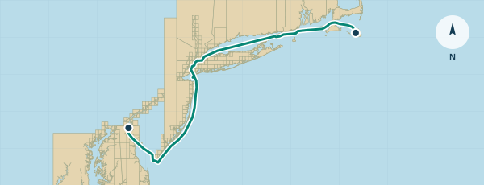
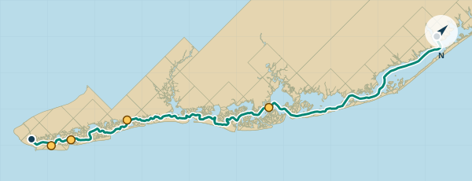

A BETTER TIME TO LEAVE
Currents & tides.
Work with the current.
Find the water when you need it.

CURRENT-ADJUSTED ARRIVALS01 / CURRENTSCoastal passages
Coastal currents
C&D Canal ↔ Nantucket
See how tidal currents change your passage time. Choose your start, finish and boat speed, then compare departures and explore the current you’ll meet along the way.
Delaware Bay · offshore New Jersey · New York Harbor · Long Island Sound · the eastern sounds
Open current planner
TIDES AT YOUR ARRIVAL TIME02 / TIDESNew Jersey inside
NJ inside tides
Toms River ↔ Cape May
Find the tide at each point when you’ll actually get there. Plan in either direction with cruise speed, recorded slow sections and adjustable bridge waits.
Recommendations focus on six priority tide checkpoints, including All Seasons Marina and the Atlantic City rail bridge.
Open tide planner